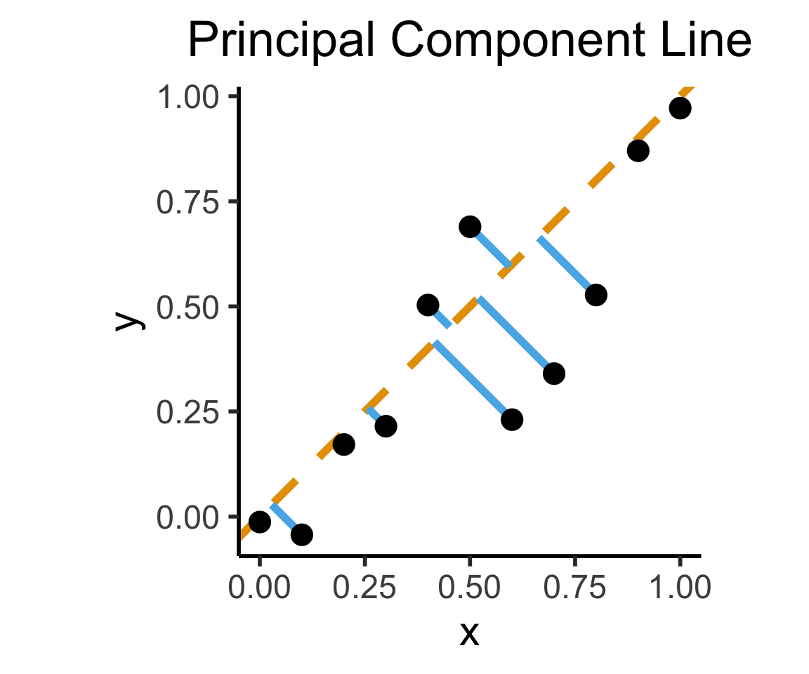

Week 11: Hypothesis Testing
DSAN 5100: Probabilistic Modeling and Statistical Computing
Section 03
Thursday, November 2, 2023
Why Learn Classical?
- Still the “standard” way to test hypotheses (e.g., in statistical software packages/libraries)
- Knowing both ensures we know what scientific results mean: knowing what a \(p\)-value is, knowing what a Bayes factor is, and knowing the difference
- Might find both types of statistical testing in the same journal/whitepaper/project!
- My

 : smile and nod as people present classical hypothesis testing results to you, then go home and re-analyze with Bayesian approach
: smile and nod as people present classical hypothesis testing results to you, then go home and re-analyze with Bayesian approach

Dilemma

(I actually didn’t make this, believe it or not, but I don’t remember where I got it)
Me Trying To Resolve The Dilemma By Just Not Teaching Classical Hypothesis Testing

(I also didn’t make this tweet)
Me Spending Three Slides Complaining About It

(I did not approve of this photo of me being used in The Simpsons)
Example 1: Bird Wingspans
- Trying to figure out the population distribution of bird wingspans.
- We hypothesize \(\mu_0 = 120\text{cm}\)
- Somehow we know the population variance \(\sigma = 20\text{cm}\), and we know that bird wingspans form a normal distribution, but we don’t know the true \(\mu\):
Code
library(tidyverse)
hyp_mu <- 120
sigma <- 20
bird_dnorm <- function(x) dnorm(x, mean=hyp_mu, sd=sigma)
sigma_df <- tribble(
~x,
hyp_mu - 3 * sigma,
hyp_mu - 2 * sigma,
hyp_mu - 1 * sigma,
hyp_mu + 1 * sigma,
hyp_mu + 2 * sigma,
hyp_mu + 3 * sigma
)
sigma_df <- sigma_df |> mutate(
y = 0,
xend = x,
yend = bird_dnorm(x)
)
plot_rad <- 4 * sigma
plot_bounds <- c(hyp_mu - plot_rad, hyp_mu + plot_rad)
bird_plot <- ggplot(data=data.frame(x=plot_bounds), aes(x=x)) +
stat_function(fun=bird_dnorm, linewidth=g_linewidth) +
geom_vline(aes(xintercept=hyp_mu), linewidth=g_linewidth) +
geom_segment(data=sigma_df, aes(x=x, y=y, xend=xend, yend=yend), linewidth=g_linewidth, linetype="dashed") +
dsan_theme("half") +
labs(
title = "Our Hypothesized Bird Distribution",
x = "Wingspan Values (m)",
y = "Probability Density"
)
bird_plot
What Would Sample Means Look Like If Hypothesis Was True?
- What we know, from asymptotic sample theory, is that \(Z = \frac{\overline{X} - \mu}{\sigma / \sqrt{N}}\) is approximately standard normal, for sufficiently large values of \(N\)!
- So, let’s (1) plot this distribution, for a bunch of potential sample means, and then (2) see where our actual observed sample mean lies on this distribution!
- Sanity check: let’s actually simulate taking sample means from 1000 size-16 samples:
Code
simulate_sample_mean <- function(N, mu, sigma) {
samples <- rnorm(N, mu, sigma)
sample_mean <- mean(samples)
return(sample_mean)
}
N <- 16
obs_sample_mean <- 129
num_reps <- 10000
sample_means <- as_tibble(replicate(num_reps, simulate_sample_mean(N, hyp_mu, sigma)))
asymp_dnorm <- function(x) dnorm((x - hyp_mu)/(sigma / sqrt(N)), 0, 1)
ggplot() +
geom_histogram(
data=sample_means,
aes(x=value, y=5*after_stat(density)),
binwidth=1) +
stat_function(
data=data.frame(x=c(100,140)),
aes(x=x, color='asymp'),
fun=asymp_dnorm,
linewidth = g_linewidth
) +
geom_segment(
aes(x = obs_sample_mean, xend=obs_sample_mean, y=-Inf, yend=Inf, color='obs'),
linewidth = g_linewidth
) +
dsan_theme("half") +
labs(
x = "Simulated Sample Mean",
y = "(Empirical) Density",
title = paste0(num_reps," Simulated Sample Means, N = 16")
) +
scale_color_manual(values=c('asymp'='black', 'obs'=cbPalette[1]), labels=c('asymp'='Asymptotic\nDistribution', 'obs'='Observed\nSample Mean')) +
remove_legend_title()
Right-Tailed Test
- Null hypothesis (in all cases) is \(H_0: \mu = \mu_0\); Right-tailed test is of alternative hypothesis \(H_A: \mu > \mu_0\)
- We reject the null if the observed sample mean \(\overline{X} = 131\) is too unlikely in the world where the null is true: \(Z(\overline{X}) \approx 1.8\)
- What cutoff should we use for “too unlikely”? (See last week’s slides…) here we’ll use \(\alpha = 0.05\): \(\int_{1.645}^{\infty}\varphi(x)dx = 0.05\), so \(1.645\) is our “critical” (cutoff) value
Code
label_df_signif_int <- tribble(
~x, ~y, ~label,
0.55, 0.04, "95% Signif.\nCutoff"
)
signif_cutoff <- 1.645
funcShaded <- function(x, lower_bound, upper_bound){
y <- dnorm(x)
y[x < lower_bound | x > upper_bound] <- NA
return(y)
}
funcShadedIntercept <- function(x) funcShaded(x, int_tstat, Inf)
funcShadedSignif <- function(x) funcShaded(x, signif_cutoff, Inf)
compute_z_val <- function(x) {
return ((x - hyp_mu) / (sigma / sqrt(N)))
}
obs_zval <- compute_z_val(obs_sample_mean)
obs_zval_str <- sprintf("%.2f", obs_zval)
sample_dnorm <- function(x) dnorm(compute_z_val(x))
ggplot(data=data.frame(x=c(-3,3)), aes(x=x)) +
stat_function(fun=dnorm, linewidth=g_linewidth) +
#geom_segment(data=sigma_df, aes(x=x, y=y, xend=xend, yend=yend), linewidth=g_linewidth, linetype="dashed") +
stat_function(fun = funcShadedSignif, geom = "area", fill = "grey", alpha = 0.333) +
geom_vline(aes(xintercept = signif_cutoff), linewidth=g_linewidth, linetype="dashed") +
geom_text(label_df_signif_int, mapping = aes(x = x, y = y, label = label), size = 8) +
geom_vline(aes(xintercept = obs_zval, color='sample_mean'), linewidth=g_linewidth) +
dsan_theme("half") +
labs(
title = "z-Test Distribution",
x = "z Scores",
y = "Probability Density"
) +
scale_color_manual(values=c('sample_mean'=cbPalette[1]), labels=c('sample_mean'='Z(Observed Sample Mean)')) +
remove_legend_title()
- Since \(Z(\overline{X}) > 1.645\), we reject the null hypothesis that this sample mean was generated by a distribution with mean \(\mu_0\)!
Two-Tailed Test
- Null hypothesis (in all cases) is \(H_0: \mu = \mu_0\); Two-tailed test is of alternative hypothesis \(H_A: \mu \neq \mu_0\) (the actual logical negation of the null hypothesis…)
- We reject the null if the observed sample mean \(\overline{X} = 131\) is too unlikely in the world where the null is true
- What cutoff should we use for “too unlikely”? (See last week’s slides…) here we’ll use \(\alpha = 0.05\), but for a two tailed test we find \(\int_{-\infty}^{-1.96}\varphi(x)dx + \int_{1.96}^{\infty}\varphi(x)dx = 0.05\), so \(1.96\) is our “critical” (cutoff) value
Code
signif_cutoff <- 1.96
neg_signif_cutoff <- -signif_cutoff
label_df_signif_int <- tribble(
~x, ~y, ~label,
-2.45, 0.18, paste0("Left\nCutoff\n(",neg_signif_cutoff,")"),
2.45, 0.18, paste0("Right\nCutoff\n(",signif_cutoff,")")
)
funcShaded <- function(x, lower_bound, upper_bound){
y <- dnorm(x)
y[x < lower_bound | x > upper_bound] <- NA
return(y)
}
funcShadedIntercept <- function(x) funcShaded(x, int_tstat, Inf)
funcShadedNegSignif <- function(x) funcShaded(x, -Inf, neg_signif_cutoff)
funcShadedSignif <- function(x) funcShaded(x, signif_cutoff, Inf)
compute_z_val <- function(x) {
return ((x - hyp_mu) / (sigma / sqrt(N)))
}
obs_zval <- compute_z_val(obs_sample_mean)
sample_dnorm <- function(x) dnorm(compute_z_val(x))
ggplot(data=data.frame(x=c(-3,3)), aes(x=x)) +
stat_function(fun=dnorm, linewidth=g_linewidth) +
#geom_segment(data=sigma_df, aes(x=x, y=y, xend=xend, yend=yend), linewidth=g_linewidth, linetype="dashed") +
stat_function(fun = funcShadedSignif, geom = "area", fill = "grey", alpha = 0.333) +
stat_function(fun = funcShadedNegSignif, geom = "area", fill = "grey", alpha = 0.333) +
geom_vline(aes(xintercept = neg_signif_cutoff), linewidth=g_linewidth, linetype="dashed") +
geom_vline(aes(xintercept = signif_cutoff), linewidth=g_linewidth, linetype="dashed") +
geom_text(label_df_signif_int, mapping = aes(x = x, y = y, label = label), size = 8) +
geom_vline(aes(xintercept = obs_zval, color='sample_mean'), linewidth=g_linewidth) +
dsan_theme("half") +
labs(
title = "z-Test Distribution",
x = "z Scores",
y = "Probability Density"
) +
scale_color_manual(values=c('sample_mean'=cbPalette[1]), labels=c('sample_mean'='Z(Observed Sample Mean)')) +
remove_legend_title()
- Since \(|Z(\overline{X})| < 1.96\), we fail to reject the null hypothesis that this sample mean was generated by a distribution with mean \(\mu_0\)!
What Is Regression?
- If science is understanding relationships between variables, regression is the most basic but fundamental tool we have to start measuring these relationships
- Often exactly what humans do when we see data!
psychology
trending_flat

How Do We Define “Best”?
- Intuitively, two different ways to measure how well a line fits the data:
Code
N <- 11
x <- seq(from = 0, to = 1, by = 1 / (N - 1))
y <- x + rnorm(N, 0, 0.25)
mean_y <- mean(y)
spread <- y - mean_y
df <- tibble(x = x, y = y, spread = spread)
ggplot(df, aes(x=x, y=y)) +
geom_abline(slope=1, intercept=0, linetype="dashed", color=cbPalette[1], linewidth=g_linewidth*2) +
geom_segment(xend=(x+y)/2, yend=(x+y)/2, linewidth=g_linewidth*2, color=cbPalette[2]) +
geom_point(size=g_pointsize) +
coord_equal() +
dsan_theme("half") +
labs(
title = "Principal Component Line"
)
Code
ggplot(df, aes(x=x, y=y)) +
geom_point(size=g_pointsize) +
geom_abline(slope=1, intercept=0, linetype="dashed", color=cbPalette[1], linewidth=g_linewidth*2) +
geom_segment(xend=x, yend=x, linewidth=g_linewidth*2, color=cbPalette[2]) +
coord_equal() +
dsan_theme("half") +
labs(
title = "Regression Line"
)
Principal Component Analysis
Principal Component Line can be used to project the data onto its dimension of highest variance
More simply: PCA can discover meaningful axes in data (unsupervised learning / exploratory data analysis settings)
Code
library(readr)
library(ggplot2)
gdp_df <- read_csv("assets/gdp_pca.csv")
dist_to_line <- function(x0, y0, a, c) {
numer <- abs(a * x0 - y0 + c)
denom <- sqrt(a * a + 1)
return(numer / denom)
}
# Finding PCA line for industrial vs. exports
x <- gdp_df$industrial
y <- gdp_df$exports
lossFn <- function(lineParams, x0, y0) {
a <- lineParams[1]
c <- lineParams[2]
return(sum(dist_to_line(x0, y0, a, c)))
}
o <- optim(c(0, 0), lossFn, x0 = x, y0 = y)
ggplot(gdp_df, aes(x = industrial, y = exports)) +
geom_point(size=g_pointsize/2) +
geom_abline(aes(slope = o$par[1], intercept = o$par[2], color="pca"), linewidth=g_linewidth, show.legend = TRUE) +
geom_smooth(aes(color="lm"), method = "lm", se = FALSE, linewidth=g_linewidth, key_glyph = "blank") +
scale_color_manual(element_blank(), values=c("pca"=cbPalette[2],"lm"=cbPalette[1]), labels=c("Regression","PCA")) +
dsan_theme("half") +
remove_legend_title() +
labs(
title = "PCA Line vs. Regression Line",
x = "Industrial Production (% of GDP)",
y = "Exports (% of GDP)"
)
And Use It for EDA
Code
library(dplyr)
library(tidyr)
plot_df <- gdp_df %>% select(c(country_code, pc1, agriculture, military))
long_df <- plot_df %>% pivot_longer(!c(country_code, pc1), names_to = "var", values_to = "val")
long_df <- long_df |> mutate(
var = case_match(
var,
"agriculture" ~ "Agricultural Production",
"military" ~ "Military Spending"
)
)
ggplot(long_df, aes(x = pc1, y = val, facet = var)) +
geom_point() +
facet_wrap(vars(var), scales = "free") +
dsan_theme("full") +
labs(
x = "Industrial-Export Dimension",
y = "% of GDP"
)
Zooming In: Significance
| Estimate | Std. Error | t value | Pr(>|t|) | ||
|---|---|---|---|---|---|
| (Intercept) | 0.61969 | 0.59526 | 1.041 | 0.3010 | |
| industrial | 0.05253 | 0.02019 | 2.602 | 0.0111 | * |
| \(\widehat{\beta}\) | Uncertainty | Test statistic | How extreme is test stat? | Statistical significance |
Code
library(ggplot2)
int_tstat <- 1.041
int_tstat_str <- sprintf("%.02f", int_tstat)
label_df_int <- tribble(
~x, ~y, ~label,
0.25, 0.05, paste0("P(t > ",int_tstat_str,")\n= 0.3")
)
label_df_signif_int <- tribble(
~x, ~y, ~label,
2.7, 0.075, "95% Signif.\nCutoff"
)
funcShaded <- function(x, lower_bound, upper_bound){
y <- dnorm(x)
y[x < lower_bound | x > upper_bound] <- NA
return(y)
}
funcShadedIntercept <- function(x) funcShaded(x, int_tstat, Inf)
funcShadedSignif <- function(x) funcShaded(x, 1.96, Inf)
ggplot(data=data.frame(x=c(-3,3)), aes(x=x)) +
stat_function(fun=dnorm, linewidth=g_linewidth) +
geom_vline(aes(xintercept=int_tstat), linewidth=g_linewidth) +
geom_vline(aes(xintercept = 1.96), linewidth=g_linewidth, linetype="dashed") +
stat_function(fun = funcShadedIntercept, geom = "area", fill = cbPalette[1], alpha = 0.5) +
stat_function(fun = funcShadedSignif, geom = "area", fill = "grey", alpha = 0.333) +
geom_text(label_df_int, mapping = aes(x = x, y = y, label = label), size = 10) +
geom_text(label_df_signif_int, mapping = aes(x = x, y = y, label = label), size = 8) +
# Add single additional tick
scale_x_continuous(breaks=c(-2, 0, int_tstat, 2), labels=c("-2","0",int_tstat_str,"2")) +
dsan_theme("quarter") +
labs(
title = "t Value for Intercept",
x = "t",
y = "Density"
) +
theme(axis.text.x = element_text(colour = c("black", "black", cbPalette[1], "black")))
Code
library(ggplot2)
coef_tstat <- 2.602
coef_tstat_str <- sprintf("%.02f", coef_tstat)
label_df_coef <- tribble(
~x, ~y, ~label,
3.65, 0.06, paste0("P(t > ",coef_tstat_str,")\n= 0.01")
)
label_df_signif_coef <- tribble(
~x, ~y, ~label,
1.05, 0.03, "95% Signif.\nCutoff"
)
funcShadedCoef <- function(x) funcShaded(x, coef_tstat, Inf)
ggplot(data=data.frame(x=c(-4,4)), aes(x=x)) +
stat_function(fun=dnorm, linewidth=g_linewidth) +
geom_vline(aes(xintercept=coef_tstat), linetype="solid", linewidth=g_linewidth) +
geom_vline(aes(xintercept=1.96), linetype="dashed", linewidth=g_linewidth) +
stat_function(fun = funcShadedCoef, geom = "area", fill = cbPalette[2], alpha = 0.5) +
stat_function(fun = funcShadedSignif, geom = "area", fill = "grey", alpha = 0.333) +
# Label shaded area
geom_text(label_df_coef, mapping = aes(x = x, y = y, label = label), size = 10) +
# Label significance cutoff
geom_text(label_df_signif_coef, mapping = aes(x = x, y = y, label = label), size = 8) +
coord_cartesian(clip = "off") +
# Add single additional tick
scale_x_continuous(breaks=c(-4, -2, 0, 2, coef_tstat, 4), labels=c("-4", "-2","0", "2", coef_tstat_str,"4")) +
dsan_theme("quarter") +
labs(
title = "t Value for Coefficient",
x = "t",
y = "Density"
) +
theme(axis.text.x = element_text(colour = c("black", "black", "black", "black", cbPalette[2], "black")))
The Residual Plot
- A key assumption required for OLS: “homoskedasticity”
- Given our model \[ y_i = \beta_0 + \beta_1x_i + \varepsilon_i \] the errors \(\varepsilon_i\) should not vary systematically with \(i\)
- Formally: \(\forall i \left[ \Var{\varepsilon_i} = \sigma^2 \right]\)
Code
library(broom)
gdp_resid_df <- augment(lin_model)
ggplot(gdp_resid_df, aes(x = .fitted, y = .resid)) +
geom_point(size = g_pointsize/2) +
geom_hline(yintercept=0, linetype="dashed") +
dsan_theme("quarter") +
labs(
title = "Residual Plot for Industrial ~ Military",
x = "Fitted Value",
y = "Residual"
)
Code
x <- 1:80
errors <- rnorm(length(x), 0, x^2/1000)
y <- x + errors
het_model <- lm(y ~ x)
df_het <- augment(het_model)
ggplot(df_het, aes(x = .fitted, y = .resid)) +
geom_point(size = g_pointsize / 2) +
geom_hline(yintercept = 0, linetype = "dashed") +
dsan_theme("quarter") +
labs(
title = "Residual Plot for Heteroskedastic Data",
x = "Fitted Value",
y = "Residual"
)
Observations vs. Base Rates
Steve is very shy and withdrawn, invariably helpful but with very little interest in people or in the world of reality. A meek and tidy soul, he has a need for order and structure, and a passion for detail.
\(\Pr(\text{Steve is a librarian} \mid \text{description})?\)

Base Rates
- Globally: ~350,000 librarians vs. ~800 million farmers
Code
library(tidyverse)
num_librarians <- 350000
num_farmers <- 800000000
occu_df <- tribble(
~Occupation, ~Count,
"Farmer", num_farmers,
"Librarian", num_librarians,
)
ggplot(occu_df, aes(x=factor(Occupation, levels=c("Librarian","Farmer")), y=Count, fill=Occupation)) +
geom_bar(stat='identity') +
dsan_theme() +
labs(
x = "Occupation",
y = "Count",
title = "Librarians vs. Farmers Globally"
)